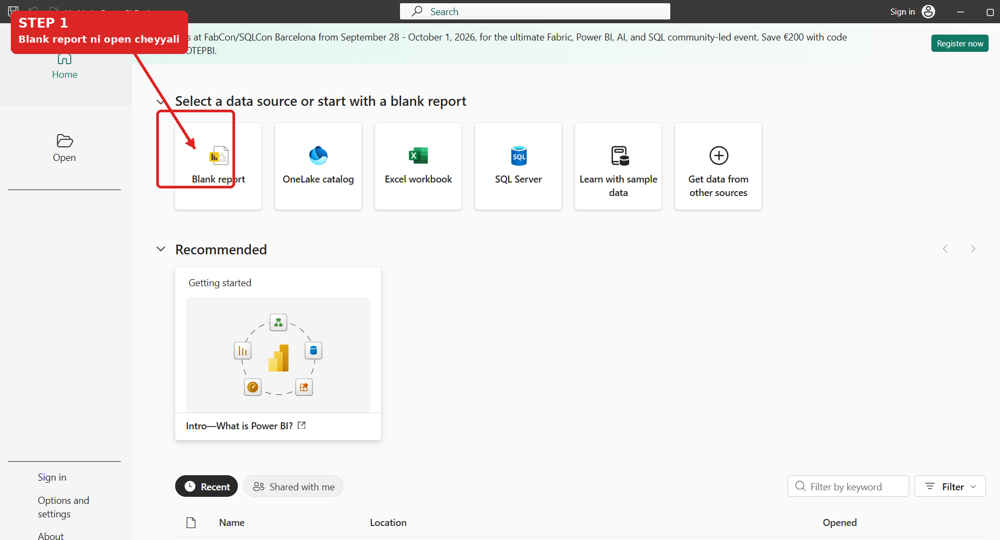
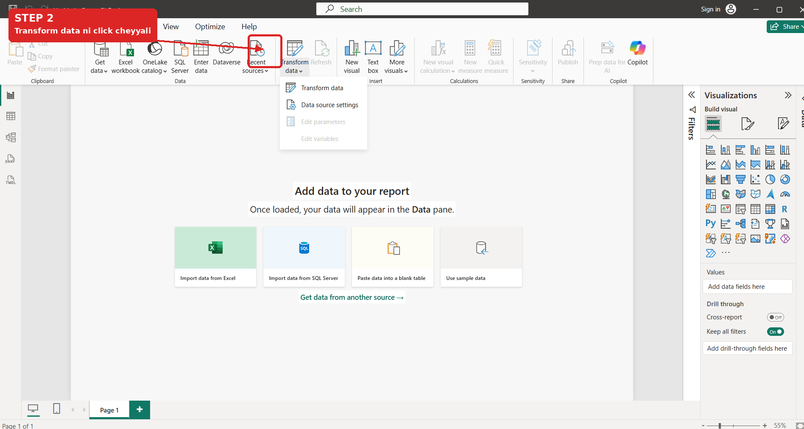
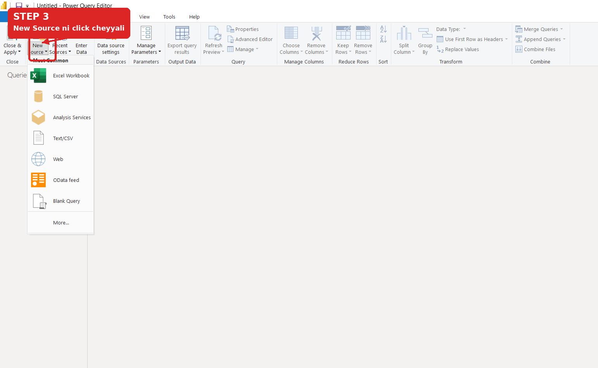
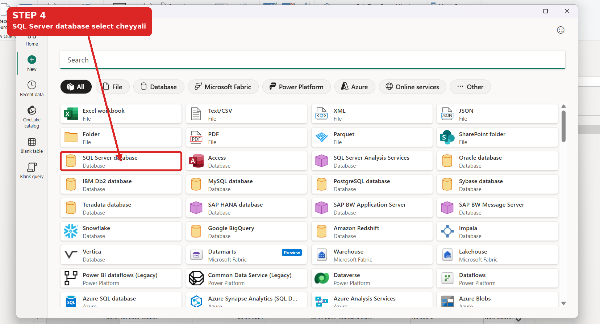
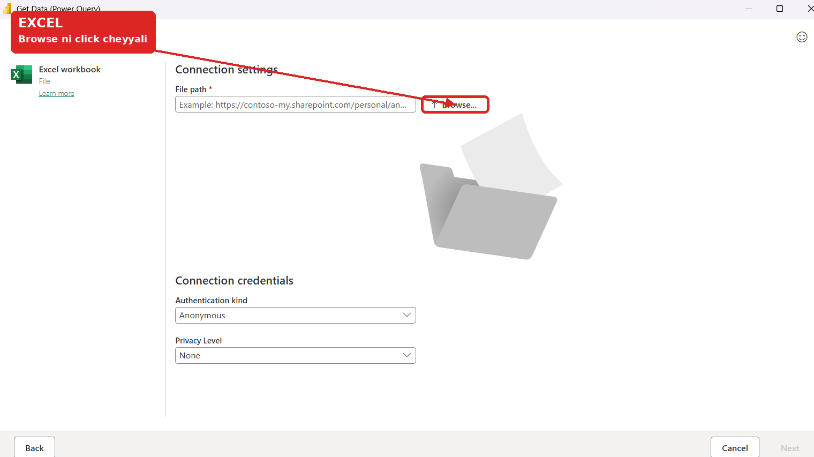
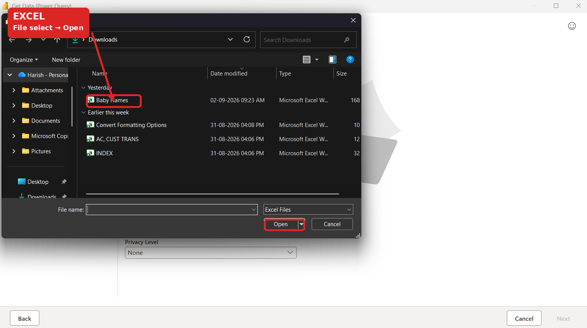
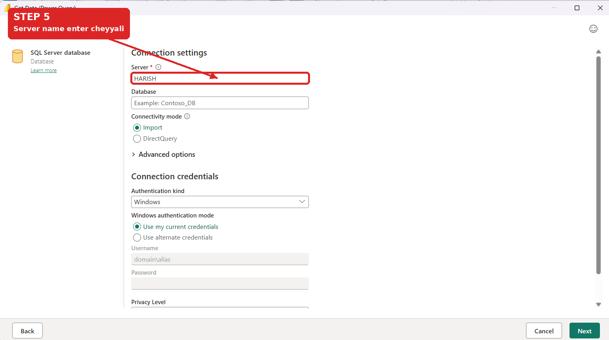
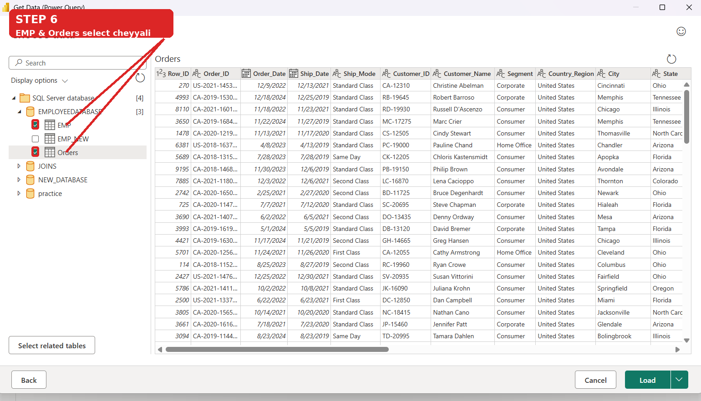
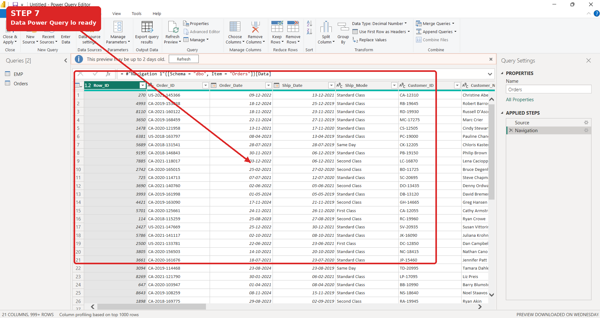

Loading Data & Introduction to Power Query
Power BI lo data ekkada nunchi vastundi? Ela connect chestham? And data ni clean & transform cheyyadaniki Power Query Editor ni ela use chestham? Ee page lo basics nunchi practical example varaku chuddam.
🧠 First, What is Power BI?
Power BI anedi Microsoft tool. Different sources nunchi data ni connect chesi, data ni clean & transform chesi, analyze chesi, finally interactive reports and visualizations create cheyyadaniki use chestham.
Simple ga cheppalante: raw data ni business ki useful information ga convert chesi easy ga understand cheyyadaniki Power BI help chestundi.
🔄 Power BI Basic Flow
Important: Data ni connect chesina tarvata, report create cheyyadaniki mundu required format lo prepare cheyyadam chala important. Daaniki Power Query Editor use chestham.
⭐ Power Query ante enti?
Power Query anedi data ni clean, transform and prepare cheyyadaniki use chese tool. Unwanted columns remove cheyyadam, data types change cheyyadam, rows filter cheyyadam, values replace cheyyadam, queries merge/append cheyyadam lantivi ikkada cheyyachu.
📚 Power BI can connect to many sources
Source different aina basic idea same: data ni Power BI ki connect chesi, required format lo prepare cheyyadam.
Remember: Source batti connection screen maruthundi, kani data ni Power Query ki teesukellina tarvata cleaning & transformation process start avuthundi.
Start with a Blank Report
Power BI Desktop open chesaka beginner ga manam blank report nunchi start cheyyachu. Ikkada nunchi data ni connect chesi report build cheyyadam start chestham.

Transform Data ni Open Cheyyali
Data ni direct ga report loki teesukokunda, mundu Transform data ni use chesi Power Query Editor ki vellachu. Akkada data ni clean & transform cheyyachu.

Power Query Editor lo New Source
Power Query Editor open ayyaka New Source option use chesi manaki kavalsina data source ni connect cheyyachu.

Choose the Data Source
Ikkada Excel, Text/CSV, PDF, Folder, SQL Server and many other sources available untayi. Beginner ga Excel/CSV easy ga start cheyyachu; career perspective lo SQL Server kuda important.

Excel nunchi Data Connect Cheyyadam
Excel select chesaka Browse click chesi mana Excel file ni choose chestham. File select ayyaka Power BI next screen lo workbook lo unna sheets/tables ni preview chestundi.


SQL Server nunchi Data Connect Cheyyadam
SQL Server select chesaka Server name enter chestham. Need unte database name kuda specify cheyyachu. Tarvata authentication details complete chesi Next ki vellali.

Required Tables Select Cheyyali
Connection successful ayyaka available databases and tables kanipistayi. Manaki report kosam kavalsina tables ni select chesi preview chudachu.

Data Power Query lo Ready
Table select chesina tarvata data Power Query Editor lo preview avuthundi. Ippudu actual cleaning & transformation work start cheyyachu.

🧹 What do we do in Power Query?
- Unwanted columns ni remove cheyyadam
- Columns ki correct data type set cheyyadam
- Rows ni filter cheyyadam
- Duplicate values remove cheyyadam
- Null/blank values handle cheyyadam
- Values replace cheyyadam
- Columns rename/split cheyyadam
- Queries ni merge or append cheyyadam
🔚 After Transformation
Data ni required format lo prepare chesaka Close & Apply click chestham. Appudu prepared data Power BI model ki load avuthundi. Tarvata relationships, calculations and visualizations side ki move avvachu.
💡 What I Learned Today
- Power BI can connect to different types of data sources.
- Power Query is the main place where we clean and transform data.
- Excel and CSV are beginner-friendly sources to practice with.
- SQL Server is useful for working with relational database data.
- Clean data should be prepared before building the final report.